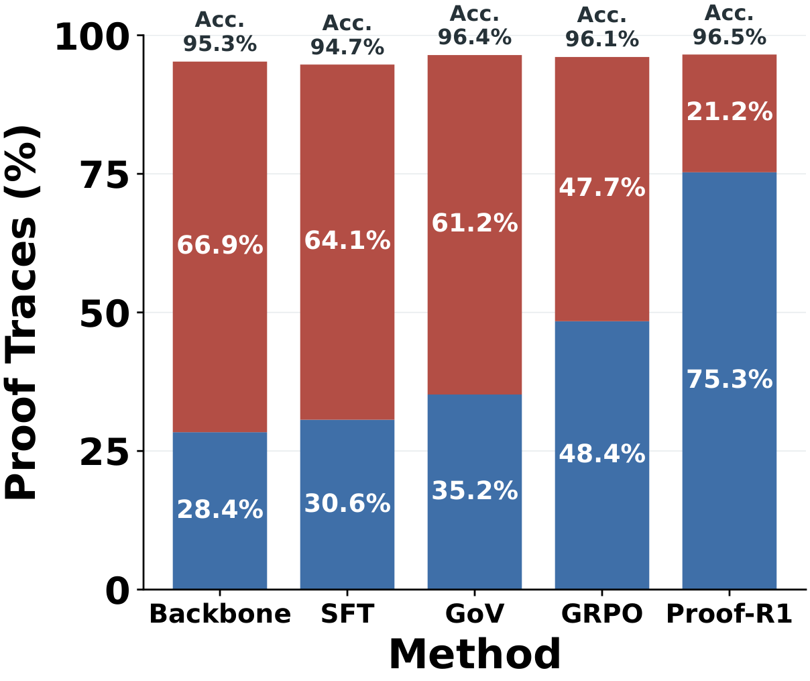
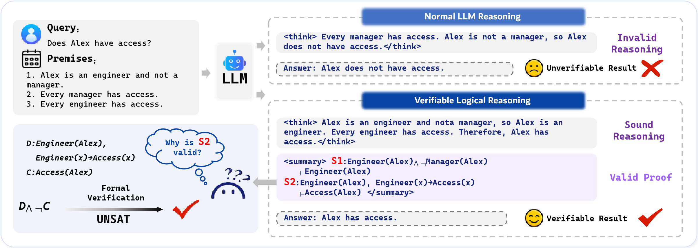
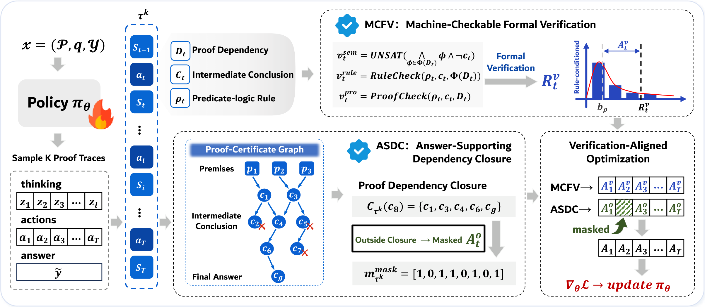
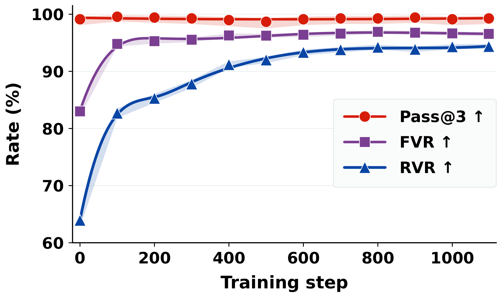

PROOF-R1 · 中文解读
让强化学习学会
构造可验证证明
答案正确，不代表推理成立。Proof-R1 将形式化验证融入证明状态、依赖追踪与策略优化， 让模型学习一步步构造真正支撑答案的证明。
01 / 答案更准，证明也更可信
Proof-R1 在 ProverQA 上训练，并在 FOLIO、ProofWriter 上检验跨数据集泛化， 覆盖 Qwen2.5-7B-Instruct、Qwen3-8B、Llama-3.1-8B 与 GLM-Z1-9B-0414 四个基座模型。
在 Qwen2.5-7B-Instruct 的 ProverQA 整体评测中，Proof-R1 的 Avg@3 达到 62.80%，高于最强基线的 59.57%；规则验证率从最强基线的 30.44% 提升至 41.19%。在困难子集上，Pass@3 达到 76.88%， 比最强基线提高 11.05 个百分点。

当 Qwen3-8B 的答案准确率已接近饱和时，Proof-R1 仍将形式化验证率（FVR）提高到 96.56%，规则验证率（RVR）提高到 94.36%， 分别比最强基线高 1.43 和 5.08 个百分点。 这里的 FVR 与 RVR 衡量的是符合评测条件的证明步骤的通过率； 上图则单独展示完整证明轨迹与答案的关系。
02 / 为什么“答对了”还不够？
考虑下面三个前提：
- Alex 是工程师，且不是经理。
- 每位经理都有访问权限。
- 每位工程师都有访问权限。
问题是“Alex 有访问权限吗？”从“Alex 不是经理”推出“Alex 没有权限”， 犯了否定前件的谬误。成立的推理应使用“Alex 是工程师”和“每位工程师都有访问权限”， 得到 Alex 有访问权限。

一个事后的验证分数可以揭示推理有误，却没有规定后续步骤能够信任哪些中间结论， 也没有区分哪些正确步骤真正支撑了答案。Proof-R1 围绕这两个问题重新组织训练过程。
03 / MCFV：让验证决定可信证明状态
模型将证明拆分为结构化动作。每个动作包含依赖、结论和规则三个核心字段， 明确说明这一步使用了哪些原始前提或中间结论，以及声称采用的谓词逻辑规则。

MCFV（Machine-Checkable Formal Verification）执行几个互补的检查：
- 语义检查：用 SMT 求解器判断“依赖成立且结论不成立”是否不可满足（UNSAT）。 如果不可满足，意味着这些依赖必然推出当前结论。
- 规则检查：验证模型声明的规则、主前提、变量替换与结论是否匹配。
- 证明进展检查：判断动作是否提供了非平凡的进展，避免重复结论、重述依赖或输出重言式。
框架维护语义验证状态与更严格的规则验证状态。通过相应检查的结论才能被接纳， 成为后续推理可引用的可信依赖。证明进展检查进一步为优化提供信号。 验证因此直接参与了证明状态的构造。
04 / ASDC：只给支撑答案的动作分配结果信用
一个步骤即使逻辑正确，也可能只是与目标无关的旁支。 ASDC（Answer-Supporting Dependency Closure，答案支撑依赖闭包）将轨迹组织成证明证书图： 节点是原始前提与中间结论，边表示显式的依赖关系。
从最终结论向前回溯，ASDC 恢复所有必要的祖先节点，得到答案所依赖的证明子图。 结果信用只分配给这个闭包中的动作；即使最终答案正确，闭包外的无关步骤也不会因此获得结果信用。
随后的验证对齐优化把 MCFV 的动作验证优势与 ASDC 的闭包掩码结果优势合并， 再对齐到生成各动作的 token 区间。关于某一步的监督因此对应到生成该动作的模型更新。
验证决定哪些结论可信，依赖决定哪些动作支撑答案，优化让模型逐步学会构造这样的证明。
05 / 训练中，证明质量如何发生变化？
Qwen3-8B 的训练曲线显示，答案的 Pass@3 保持高位，同时 FVR 与 RVR 持续改善。 随着训练推进，完全满足验证义务的动作占比增加，未通过语义、规则或进展检查的动作占比下降。

梯度分析还显示，MCFV 与 ASDC 提供了互补的优化方向： “这一步在形式上成立”与“这一步对最终答案有用”并非同一个目标。 两者结合，使模型既生成合法的中间结论，又将它们组织为支撑答案的依赖链。
06 / 面对训练时未见的规则，仍能构造证明
FOLIO 是独立于 ProverQA 生成器的人工编写逻辑推理数据集， 包含训练规则本体未覆盖的全称与存在量词推理。论文评估了七类训练时未见的规则： 它们没有参与 ProverQA 上的策略训练，评测时通过提示提供规则定义，模型参数保持冻结。
分析使用 51 个 FOLIO 问题，每题采样三条输出，共 153 条输出／模型。 所有公式、依赖、步骤编号和答案绑定保持不变，再用扩展的检查器验证， 并按当前步骤的规则是否属于训练本体进行分组。
| 方法 | FVR | RVR |
|---|---|---|
| Backbone | 63.24 | 34.92 |
| SFT | 67.50 | 45.71 |
| Proof-R1 | 86.21 | 63.08 |
Proof-R1 在未见规则上的 FVR 与 RVR 分别比 Backbone 提高 22.97 和 28.16 个百分点。 这些结果表明，学到的证明构造能力可以迁移到训练规则本体之外的逻辑操作。
07 / 从“会给答案”走向“会构造证明”
Proof-R1 将形式化验证引入可信证明状态的维护，并通过答案支撑依赖闭包追踪证明结构。 模型由此学习在显式依赖与逻辑规则的约束下，逐步建立可检查、可回溯的证明。 三个逻辑推理基准、四个基座模型及训练时未见规则的实验，共同检验了这一方向。
论文
Learning to Prove, Not Just to Answer: Reinforcement Learning from Formal Verification for Natural-Language
Logical Reasoning
作者
Qili Zhang, Qianren Mao, Hanze Cai, Kaiming Zhao, Yuening He, Xihan Lei, Yashuo Luo, Hanwen Hao, Yutong Gu,
Likang Xiao, Zhijun Chen, Weifeng Jiang, Haoyi Zhou, Jianxin Li
机构
中关村实验室 · 北京航空航天大学 · 南洋理工大学 · 香港理工大学